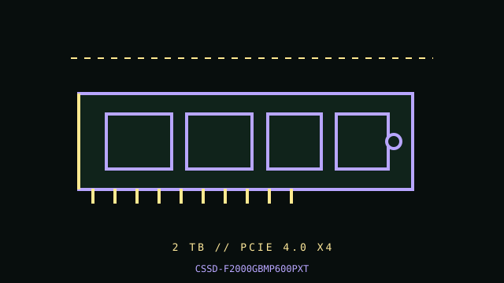

[ PCIE 4.0 NVME DRIVES // IDENTIFIED PRODUCT ]
CORSAIR MP600 PRO XT 2 TB (CSSD-F2000GBMP600PXT)
2 TB M.2 2280, factory heatsink; PCIe 4.0 NVMe SSD. Cataloged by the complete manufacturer part number below; performance figures are vendor-rated, not independent test results.

IDENTIFICATION: Verify the complete MPN, suffix, serial/date code, hardware revision and firmware against the product label. Capacity variants, factory heatsinks and regional SKUs may differ; the link and rated data below apply only to the specified configuration where the manufacturer identifies it.
Manufacturer-identified specifications
| Product / MPN | CORSAIR MP600 PRO XT 2 TB (CSSD-F2000GBMP600PXT) — CSSD-F2000GBMP600PXT |
|---|---|
| Capacity / form factor | 2 TB; M.2 2280, factory heatsink. |
| Interface / lane width | PCIe 4.0 x4. |
| Protocol | NVMe 1.4. |
| Rated performance / endurance | Sequential up to 7,100 MB/s read and 6,800 MB/s write; 1,400 TBW endurance for 2 TB. |
| Model era | 2021 product generation; check manufacturer lifecycle/support notice. |
| Heatsink / revision | Tall pre-installed aluminum heatsink. Treat heatsink height as a physical constraint; the SSD should not be installed under a motherboard M.2 cover unless Corsair/host documentation confirms clearance. |
Compatibility, installation & service
- This SKU is the large-heatsink variant, not the bare MP600 PRO XT. Verify the motherboard’s M.2 socket length and whether a second cover can be removed. It negotiates only at the host-supported PCIe generation/lane width; NVMe boot support remains a system UEFI/OS matter.
- Measure socket clearance against the fitted heatsink and confirm the correct M.2 standoff/fastener; do not pry off the factory heatsink or force a board shield over it. Confirm x4 lane routing and boot NVMe support in the motherboard manual. Keep airflow around the heatsink, check temperature during sustained writes, and preserve backups/firmware details before service or firmware updates.
- Do not hot-plug an M.2 module unless the server/platform manual explicitly documents hot-plug support. Shut down cleanly, disconnect standby power when instructed, and use electrostatic-discharge precautions during handling.
- Before replacing a boot drive, verify a recoverable backup, OS recovery media, encryption keys, firmware settings and the target system’s boot mode; physical fit does not establish compatibility.
Manufacturer references
- CORSAIR MP600 PRO XT 2 TB — exact manufacturer SKU pageOfficial manufacturer product/specification reference; use the exact MPN on the drive label and its linked specification/downloads for revisions, capacity ratings, fit and warranty limits.
- NVM Express — specifications and technical documentationStandards reference for NVMe; it does not establish this product’s SKU-specific implementation.
Manufacturer ratings are model/capacity-specific and measured under stated vendor conditions; they are not guarantees of sustained speed in every host. Confirm current datasheet/manual, support status and warranty in the manufacturer’s regional support portal before deployment.